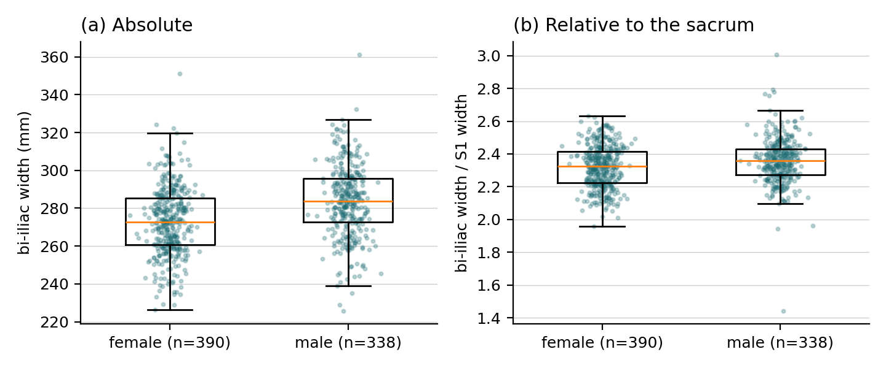

WelcomeWhat this is, and who it is for
OpenSpineConsortium builds openly licensed datasets of the spine and pelvis and the tools to measure them. Our flagship, CTSpinoPelvic1K, is 802 abdominopelvic CT scans with every vertebra, the sacrum, the first sacral segment, both hip bones, both femora and every rib labeled on one coordinate frame, plus the anatomy that makes lumbar numbering ambiguous recorded as itself. Students built it. Students are now using it to answer anatomical questions at a scale a cadaver lab never reaches.
This primer is the on-ramp. It assumes nothing: not a terminal, not Python, not git. Each section ends with something concrete you can check. Work through it in order the first time; afterwards it is a reference.
What you will be able to do
Open a labeled CT, measure a bone across 802 people, compare groups, draw the figure, and hand in a study someone else can rerun.
How long it takes
One afternoon for the toolkit and the grid. One evening for the dataset and the demo. Your own project starts on day three.
How you get help
Claude Code, in your editor, for the code. The workshop tutorials for depth. Your mentor, by pull request and ClickUp, for the science.
Section 1The toolkit
Four installs. Each is a download and a click except Python, which comes from a terminal command the linked tutorial gives you verbatim.
1.1 An editor: Visual Studio Code
Download from code.visualstudio.com and install with the defaults. On the first launch install two extensions from the Extensions panel (Ctrl+Shift+X on Windows, Cmd+Shift+X on a Mac): Python (by Microsoft) and Remote - SSH (by Microsoft). Remote - SSH is how you will edit files on the grid as if they were on your laptop.
1.2 A command line and git
macOSXcode Command Line Tools
Open Terminal (Applications → Utilities) and run xcode-select --install. Accept the dialog. This installs git and the compilers Python packages need. You do not need the full Xcode app.
WindowsGit for Windows and WSL
Install Git for Windows with the defaults, which gives you Git Bash. Then, in an administrator PowerShell, run wsl --install and reboot: Windows Subsystem for Linux gives you the same Linux terminal the grid has, so every command in this primer works unchanged.
1.3 Python: Miniforge
Follow Workshop Tutorial 1, steps 1 and 2. It installs Miniforge (Python plus the mamba package manager) and creates an imaging environment. Do it on your laptop now; you will repeat the same two steps on the grid in Section 2, and Claude can do it for you there.
1.4 Claude Code
Claude Code is an AI programming assistant that runs in your terminal and inside VS Code. It reads your files, writes and edits code, runs commands with your permission, and explains what it did. It is how most of your code will get written, and the reason this primer can promise a study by the end.
macOS / Linux / WSLInstall
curl -fsSL https://claude.ai/install.sh | bash
Windows PowerShellInstall
irm https://claude.ai/install.ps1 | iex
Then, in VS Code, install the Claude Code extension from the Extensions panel. Open a terminal (Ctrl+`), type claude, and sign in when the browser opens. You need a Claude account with Claude Code access; ask your mentor which plan the lab uses before buying anything.
Check: in a VS Code terminal, git --version, mamba --version and claude --version each print a version. If one does not, ask Claude in the terminal that works: paste the error and say what you were installing.
Section 2The grid
The Wayne State grid is a Linux cluster with far more CPU, memory and GPU than your laptop, run by SLURM, a job scheduler. You log in to a small "login node" to edit files and submit jobs; the jobs run on the big nodes. The rule is simple: anything heavier than a minute of work runs as a job, never on the login node.
2.1 Get an account
Accounts are tied to your WSU AccessID and sponsored by a faculty member. Request one through Wayne State C&IT's High Performance Computing pages at tech.wayne.edu (search "grid account") and name Gregory Schwing as sponsor. Email him that you have applied so he can confirm it.
2.2 Make an SSH key
An SSH key is a pair of files: a private one that stays on your laptop and a public one you give to the grid. It lets you log in without typing a password and it is what VS Code's Remote - SSH uses. In your laptop terminal (Terminal, Git Bash, or WSL):
# make the key; press Enter at every prompt, or add a passphrase you will remember
ssh-keygen -t ed25519 -C "youraccessid@wayne.edu"
# copy the public half to the grid (type your grid password once)
ssh-copy-id youraccessid@grid.wayne.edu
# from now on this logs you in without a password
ssh youraccessid@grid.wayne.eduOn Windows Git Bash, if ssh-copy-id is missing, do it by hand: cat ~/.ssh/id_ed25519.pub | ssh youraccessid@grid.wayne.edu "mkdir -p ~/.ssh && cat >> ~/.ssh/authorized_keys".
2.3 Give the grid a short name
Create or edit ~/.ssh/config on your laptop so that ssh grid is enough:
Host grid
HostName grid.wayne.edu
User youraccessid
IdentityFile ~/.ssh/id_ed255192.4 Open the grid in VS Code
Press F1, choose Remote-SSH: Connect to Host, pick grid. A new VS Code window opens whose files and terminal live on the grid. Open your home folder there. Everything from here on happens in that window, including Claude Code, which you install on the grid the same way as on your laptop (Section 1.4, the macOS/Linux command).
2.5 SLURM in five commands
| command | what it does |
|---|---|
sbatch job.sh | submit a job script; prints a job id |
squeue -u $USER | list your jobs and whether they are waiting or running |
scancel <jobid> | stop a job |
tail -f logs/<name>_<jobid>.out | watch a job's output as it runs |
sacct -j <jobid> --format=JobID,State,Elapsed,MaxRSS | after it ends, how long it took and how much memory it used |
Workshop Tutorial 5 walks through a job script line by line. The template job script in Student_Projects is the one you will actually use.
Where files live. Your home directory is small and backed up; put code and results there. Large data lives in the shared dataset folder your mentor names. Never put CT volumes in git, and never run a long script on the login node.
Section 3Teaching Claude to work on the grid
Claude Code reads a file called CLAUDE.md in your project folder at the start of every session. That file is where you tell it, once, how the grid works, where the data is, and which rules never bend. Student_Projects ships a template; copy it into your project folder and edit the three lines marked EDIT.
With that in place, these are the prompts that do the work. Type them to Claude in the VS Code terminal on the grid.
Create the mamba environment from templates/environment.yml in my home
directory and show me how to activate it.
Write a SLURM job script from templates/slurm_job.sh that runs
projects/<me>/measure_something.py with 8 workers and 32 GB of memory.
Do not submit it; show it to me and explain each #SBATCH line.
My job 123456 failed. Here is the tail of logs/osc_measure_123456.err:
<paste> What went wrong and what do I change?Two habits keep you in charge. Claude drafts, you submit: read the job script, then run sbatch yourself. Claude explains, you decide: when it proposes a measurement, ask it which label identifiers it is using and why, and check them against dataset_labels.json. The template CLAUDE.md already tells it to work this way.
Check: from your project folder on the grid, claude starts, and asking "what does CLAUDE.md say I should never do?" gets back the rules about reorienting volumes, assuming axes, and committing data.
Section 4The dataset: CTSpinoPelvic1K
802 abdominopelvic CT scans from one prospective screening trial (ACRIN 6664, 15 centers, five scanner vendors), each with a label volume on the same grid as the image. A label volume is an image whose voxels hold integers naming the structure at that point. The integers are the label scheme.
4.1 The label scheme (v10)
The authoritative list is dataset_labels.json in the download. Read it in code; do not type identifiers from memory.
4.2 The manifest
manifest.json has one row per record. The fields you will group by most: sex (female 393, male 345, other 11, missing 53), age (709 records), position (prone or supine), castellvi_type (33 records; null means ungraded, not normal), has_l6, has_lumbar_rib, n_lumbar_labels, hardware_labelled, plus scanner make, model, kernel and slice thickness.
4.3 Four rules before any analysis
They are in KNOWN_ISSUES.md, which ships with the data. Read the whole file once; these four bite most often.
- A null Castellvi grade means nobody looked. Do not count it as normal.
- Exclude the 11 hardware records from anything measured across a joint or a gap; eight of them have replaced hips.
- Do not pool prone and supine for anything postural (lordosis, sacral slope, pelvic tilt). Widths are fine.
- Nine four-lumbar records carry the fused transitional vertebra under the S1 identifier. Filter on
n_lumbar_labelsif that matters to you.
4.4 Get the data
The labels and metadata are 1.1 GB. The CT images are another 195 GB; download them only when you need voxel intensities (bone density, Hounsfield units), and on the grid, not your laptop.
# in your mamba environment
python - <<'EOF'
from huggingface_hub import snapshot_download
snapshot_download("OpenSpineConsortium/CTSpinoPelvic1K", repo_type="dataset",
local_dir="CTSpinoPelvic1K",
allow_patterns=["labels/*", "manifest.json", "dataset_labels.json",
"KNOWN_ISSUES.md", "splits_5fold.json", "README.md"])
# add "ct/*" to allow_patterns for the images (195 GB)
EOFThe archival copy is on Zenodo, 10.5281/zenodo.22642578, which is what you cite. On the grid, ask your mentor for the path of the shared copy rather than downloading your own.
4.5 Look at it
Before measuring anything, look at a record. Install ITK-SNAP, open ct/0007_ct.nii.gz as the main image and labels/0007_label.nii.gz as a segmentation, and load the label descriptions from the descriptor script so the colors have names. Workshop Tutorial 4 covers the viewer; Tutorial 2 explains the file format.
Section 5The demo study: is the female pelvis relatively wider?
Every project here has the same shape: a question, a measurement made from labels, a comparison between groups, a figure, and a report whose numbers come from a file the script wrote. The demo does all five in one 120-line script you can read in ten minutes. It lives in examples/pelvic_width_dimorphism/ of Student_Projects.
5.1 The question and the measurement
Is the pelvis wider in females, once you allow for the size of the skeleton it sits on? For each record the script measures the left–right extent of the two hip bones (identifiers 30 and 31) and of S1 (29), in millimeters, and divides one by the other. The left–right axis is read from the file's affine, so prone and supine records are measured identically.
5.2 Run it
git clone https://github.com/OpenSpineConsortium/Student_Projects.git
cd Student_Projects
mamba activate osc
python examples/pelvic_width_dimorphism/measure_pelvic_width.py \
--data /path/to/CTSpinoPelvic1K --out examples/pelvic_width_dimorphism/results --workers 8About ten minutes on eight CPUs. On the grid, wrap the same command in templates/slurm_job.sh and sbatch it.
5.3 What it finds

The answer, for this measurement, is no. Male pelves are about 4 percent wider at the iliac crests in absolute terms (283.9 against 272.9 mm), and dividing by S1 width does not reverse that: males stay slightly wider relative to their sacrum (2.36 against 2.32), a small effect but not a chance one (390 females, 338 males). The classic female dimorphism lives in the pelvic inlet, the subpubic angle and the sciatic notch, none of which a bi-iliac extent measures. That is the first lesson of the demo: the measurement decides which question you actually asked, and an honest report says so. Every number above is in results/report.txt, written by the script from results/pelvic_width.csv, one row per record. That is the standard for your project too: if a number appears in your text, a script wrote it to a file first.
5.4 Make it yours
Change one thing at a time. Swap identifiers 30 and 31 for 32 and 33 and you measure femoral spread. Change the axis from left–right to superior–inferior and you measure heights. Group by position instead of sex and you test whether posture changes a width (it should not; that is a useful sanity check). Group by has_l6 and you have a transitional-anatomy question. Ask Claude to make the change and to explain the two lines it edited.
Section 6Your project
Projects live in one private repository, OpenSpineConsortium/Student_Projects, one folder per project. Proposals are reviewed as pull requests, and approved projects are tracked in ClickUp.
6.1 Get access
Make a free GitHub account if you do not have one, then email your GitHub username to gregory.schwing@med.wayne.edu with the subject "Student_Projects access". You will be added as a collaborator.
6.2 Write the proposal
Copy templates/proposal_template.md to projects/<lastname>_<topic>/proposal.md and fill in every section: the question, what is known, exactly what you will measure (identifiers, axis, unit), who you compare and what you exclude, the analysis, the outputs, milestones with dates, and what could go wrong. One page. The worked example, schwing_pelvic_width_dimorphism, is the demo study written as a proposal; imitate it.
6.3 Open the pull request
git checkout -b proposal/<lastname>-<topic>
mkdir -p projects/<lastname>_<topic>
cp templates/proposal_template.md projects/<lastname>_<topic>/proposal.md
# ... edit the proposal ...
git add projects/<lastname>_<topic>/proposal.md
git commit -m "Proposal: <title>"
git push -u origin proposal/<lastname>-<topic>GitHub then offers to open a pull request. The PR template asks for the email address that should receive your ClickUp invitation, the mentor you are requesting, and a checklist (primer read, demo run, no data files). Fill all of it. The example pull request shows what a complete one looks like.
6.4 Review, approval, ClickUp
Your mentor reviews in the PR thread; expect questions about the measurement and the exclusions, and revise by pushing to the same branch. When the proposal is approved the PR is merged and a ClickUp invitation goes to the email you gave. Your milestones become tasks there; that is where progress, blockers and deadlines are tracked from then on. Code and results keep going into your project folder by pull request, each one naming its ClickUp task.
6.5 Working with your mentor
- One branch per piece of work, a pull request when it is ready for eyes, never a commit straight to
main. - Keep
JOURNAL.mdin your folder: a dated line whenever something worked or failed. It becomes your methods section. - Every figure has a script that makes it; every number in your text was written to a file by that script.
- Ask early. A question in the PR thread or a ClickUp comment costs nothing; a week lost to a wrong identifier costs a week.
- Authorship follows the ICMJE criteria and is settled by contribution, recorded as you go.
Section 7Basics you will need
7.1 The terminal in ten commands
| command | meaning |
|---|---|
pwd | where am I |
ls -la | what is here |
cd folder · cd .. | go into a folder · go up one |
mkdir -p a/b | make folders |
cp src dst · mv src dst · rm file | copy · move or rename · delete (no undo) |
cat file · head file · tail -f file | print a file · its first lines · follow it as it grows |
grep -n word file | find lines containing a word |
python script.py --help | run a script; every script here explains its options |
| Ctrl+C | stop what is running |
| Tab | autocomplete a file name; press it constantly |
7.2 Git in six commands
git clone <url> # copy a repository to your machine
git checkout -b name # start a branch for a piece of work
git status # what changed
git add file # stage a change
git commit -m "what" # record it, with a message that says what and why
git push -u origin name # send the branch to GitHub; then open a pull request there7.3 Reading a label volume in twenty lines
import json, numpy as np, nibabel as nib
img = nib.load("CTSpinoPelvic1K/labels/0007_label.nii.gz")
lab = np.asanyarray(img.dataobj) # the integer volume; never reorient it
names = json.load(open("CTSpinoPelvic1K/dataset_labels.json"))["id_to_name"]
ids, counts = np.unique(lab, return_counts=True)
for i, n in zip(ids, counts):
print(i, names[str(i)], n, "voxels")
codes = nib.aff2axcodes(img.affine) # which array axis is left-right?
lr = [k for k, c in enumerate(codes) if c in "LR"][0]
mm = img.header.get_zooms()[lr] # voxel size along it
hips = np.isin(lab, [30, 31])
cols = np.nonzero(hips.any(axis=tuple(k for k in range(3) if k != lr)))[0]
print("bi-iliac width:", (cols.max() - cols.min() + 1) * mm, "mm")7.4 The manifest in five lines
import pandas as pd
m = pd.read_json("CTSpinoPelvic1K/manifest.json")
print(m["sex"].value_counts(dropna=False))
print(m.groupby("sex")["age"].describe())
print(m[m["has_l6"]][["label_file", "castellvi_type", "n_lumbar_labels"]])7.5 Asking Claude well
- Say what you want to end up with, not how: "a CSV with one row per record and the width in mm" beats "loop over the files".
- Give it the facts it cannot see: paste the error, the log tail, the identifier list.
- Ask it to explain before it edits: "which lines will you change, and why?"
- Ask for small steps: ten records first, then all 802.
- When it is confident and you are not, ask it to check: "print the unique identifiers in that volume and confirm 29 is present."
7.6 Reproducibility, the short version
- The environment is a file (
environment.yml), and the file is in git. - One script per output, run from the repository root, with its options in
--help. - Random things get a seed. Figures get a caption in the script's docstring.
- Results are written by scripts, never edited by hand; if a number is wrong, fix the script and rerun.
- Cite the dataset by DOI, and say which version.
The workshop tutorials go deeper: running a pretrained segmentation network, training one on the grid, and writing the paper.
Section 8You are onboarded when
- VS Code, git, mamba and Claude Code all answer
--versionon your laptop. ssh gridlogs you in without a password, and VS Code opens your grid home folder.- Claude Code on the grid can recite the rules in your CLAUDE.md.
- The labels and manifest of CTSpinoPelvic1K are on disk, and you have opened one record in ITK-SNAP.
- The demo study ran end to end and its report matches the numbers in Section 5.
- Your proposal is a pull request in Student_Projects, with the email for your ClickUp invitation filled in.
Then the science starts. Welcome.